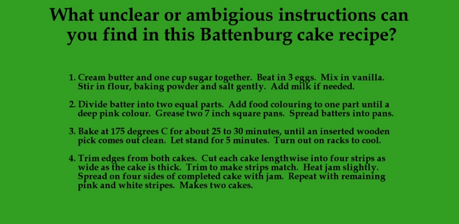

Recipe Confusion
"Cream butter and one cup sugar together." What kind of butter and what kind of sugar needs to be used? Salted or unsalted butter? Caster sugar or raw sugar? It is impossible to decipher. Then to beat three eggs; do all components of the egg need to be placed both the egg yolk and the egg white? "Stir in flour, baking powder and salt gently." Not even the flour is specified; baking or plain flour, how am I supposed to bake this cake properly? The instructions don't necessarily instruct either especially when it is said "add milk if needed". How am I supposed to know when to add milk, the instructions imply that the audience already know what to do and have a professional understanding of the recipe that it is only hinting what to do but no complete instructions. With such instructions, it is impossible to get the recipe right in one go because of the ambiguity of the instructions preventing readers to fully comprehend the recipe.